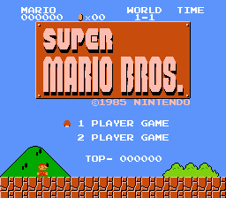

onefineday's place
This is just a test site until I set up something better, and have something to share
SMB1 Scoring Patch

In the meantime, I put together a small SMB1 patch which changes the way scoring is handled. The features are as follows:
- Kicking a shell starts the ShellChainCounter two steps lower than it does normally - instead of starting at 500 points, it starts at 200 and must defeat two extra enemies to reach 500, then progression is normal
- Kicking a shell no longer allows players to attain a 1-up - instead it will add 8000 points for every kill after the first 8k kill
- 1-up mushrooms no longer give lives - instead they add 8000 points when collected
- Players only receive 10 points per timer tick left at the end of level, instead of 50
- The highest tier of the flagpole only gives 4000 bonus points
- Bowser gives 8000 points if fire-killed
- The Koopa Troopas at the end of 3-1 are replaced with Goombas
Sound like fun? Check out the patch and apply it to a Super Mario Bros. US ROM.